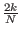
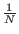
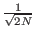
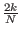
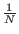
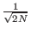
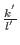
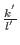

Theorem 2: Let the state vector before step 2a of Grover's algorithm be as follows:
Proof: Let the initial amplitudes be k and l, let the amplitudes after the selected phase inversion step 2a be k' and l', let the amplitudes after the inversion about average step 2b be k'' and l''.
By theorem 1 we know
k'' =  1 -
1 - 
 k + 2
k + 2 l (note the reversal of terms in the coefficient of
k, this is due to the phase inversion of k in step 2a), therefore
k = k'' - k = -  +21 - l.
By the assumption
0 < k < 1/ and Corollary 1.2 it follows
that
| l| > . By assumption l is positive, thus
l > . Combining this with
k = k'' - k = - +21 - l. it follows that
k > . [Grover96]
l (note the reversal of terms in the coefficient of
k, this is due to the phase inversion of k in step 2a), therefore
k = k'' - k = -  +21 - l.
By the assumption
0 < k < 1/ and Corollary 1.2 it follows
that
| l| > . By assumption l is positive, thus
l > . Combining this with
k = k'' - k = - +21 - l. it follows that
k > . [Grover96]
To show l'' positive consider after step 2a of the algorithm,
after the selective phase inversion, but before the inversion about
average. At this point k' < 0 and l' > 0, since
 0 < k <
0 < k <  and
| l| > (from
previous paragraph) that
 <
and
| l| > (from
previous paragraph) that
 <  .
This means that after step 2a our register is in a state covered by
Corollary 1.1, which states after the inversion about average
operation l'' will be positive.
.
This means that after step 2a our register is in a state covered by
Corollary 1.1, which states after the inversion about average
operation l'' will be positive.